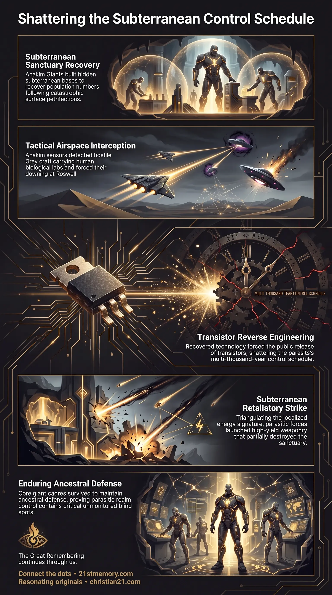

Anakim Giants Caused the Roswell Crash
Anakim Giants Caused the Roswell Crash — base sensors tracked two H1 Orion Grey craft and the Anakim brought both down at Mac Brazel's farm.

Anakim Giants Caused the Roswell Crash — base sensors tracked two H1 Orion Grey craft and the Anakim brought both down at Mac Brazel's farm.

The Roswell Checkmate — the 1947 interception forced the point-contact transistor into public hands and exposed the subterranean base.
The Inner Earth consists of subterranean inner-earth simulations maintained within the physical realm, functioning as specialized environmental pockets shielded from surface atmospheric purges and periodic reset cycles. For eons, the parasites maintained binding inner earth treaties with these subterranean domains, explicitly agreeing to exempt their populations from surface farm culls and demographic harvests. Unbeknownst to the parasitic management team, the Anakim Giants established secret Anakim bases inside these unmonitored simulation sectors. These hidden installations served as sanctuaries where the Anakim could regroup as a species and rebuild their population numbers following the devastation of earlier resets, during which their ancestral Grand Canyon cities were incinerated by directed energy weapons and hundreds of giants suffered total petrifactions. Operating covertly from this subterranean sanctuary, the Anakim deployed advanced sensor technology to monitor surface airspace, culminating in the 1947 tactical interception and downing of two hostile H1 Orion Grey craft. While this intervention successfully forced the leak of the point-contact transistor into the public domain and disrupted the parasite's multi-thousand-year control schedule, it exposed the hidden subterranean sector to parasitic retaliation, leaving the primary installation partially destroyed.
The existence of inner-earth simulations highlights a critical structural blind spot in parasitic realm management. Although parasitic controllers negotiated formal inner earth treaties to ensure subterranean sectors remained unmolested during surface farm culls, they lacked total sensory coverage over internal activities within those isolated simulations. Consequently, the Anakim Giants successfully built and maintained operational subterranean bases directly inside the realm's hidden architecture without triggering parasitic detection for multiple eons.
The Anakim bases functioned primarily as recovery and repopulation nodes designed to overcome the catastrophic losses of past reset cycles. During earlier planetary wipes, parasitic forces utilized high-density energy weapons to target giant population centers, melting Grand Canyon cities and subjecting hundreds of Anakim to total petrifactions. The secret inner-earth facilities provided the stable, frequency-shielded environment necessary for the surviving giant bloodlines to gradually rebuild their biological numbers and preserve high-density technological assets away from surface surveillance.
The operational secrecy of the Anakim base was deliberately sacrificed in 1947 when the Anakim prioritized realm liberation over their own base security. Upon detecting two H1 Orion Grey craft conducting unauthorized human abductions and operating mobile genetics labs, the Anakim utilized base energy arrays to safely bring down both craft at Mac Brazel's farm. This action successfully shattered the parasite's control schedule by forcing the immediate reverse-engineering of the point-contact transistor. However, identifying the source of the electromagnetic intervention exposed the subterranean location to the parasites, who launched a retaliatory strike that left the primary installation partially destroyed.
The Inner Earth environment operates through sophisticated simulation architecture embedded directly within the realm's physical substrate. These inner-earth simulations utilize localized frequency parameters that isolate their interior geography from surface environmental shifts, planetary resets, and weather modifications. The inner earth treaties enacted by the parasites recognized these domains as autonomous zones, establishing a strict covenant that exempted subterranean inhabitants from scheduled farm culls, demographic harvesting, and societal wipes.
Following the devastation of earlier resets—where surface Grand Canyon cities were incinerated and giant populations suffered widespread petrifactions—the surviving Anakim Giants retreated into these unmonitored simulation pockets. The Anakim base was constructed as an enduring sanctuary equipped with high-density environmental controls, life-support hardware, and technological archives. Over eons, the Anakim executed an extended recovery protocol, quietly expanding their population numbers and upholding their ancestral oath to protect human biological development.
The subterranean base contained deep-range electromagnetic and biological sensor arrays capable of scanning surface airspace and monitoring parasitic craft trajectories. In July 1947, base sensors picked up two reconnaissance craft operated by hostile H1 Orion Greys executing systematic search patterns over New Mexico. Diagnostic scans revealed:
Human tissue samples and non-viable human biological remains stored in onboard containment units.
Active mobile genetics labs configured for non-consensual capture and genetic harvesting of surface humans.
Direct violations of the Sovereign Accord and established field intervention laws.
Leveraging localized energy disruption technology from the Anakim base, base operators neutralized the flight control systems of both craft, directing them safely to a remote landing site on Mac Brazel's farm near Roswell to prevent surface human casualties while ensuring physical debris recovery by the Military Industrial Complex.
The tactical interception of the H1 Orion craft exposed the signature of high-density energy hardware operating from within the unmonitored inner-earth sector. Realizing that an active population of Anakim Giants had been organizing beneath their control grid for eons, parasitic forces initiated immediate retaliatory measures:
Target Identification — Triangulation of the energy pulse used to down the Orion craft located the primary entry threshold and structural footprint of the Anakim base.
Subterranean Strike — Parasitic controllers deployed high-yield energy weaponry against the subterranean sector, targeting command structures, sensor arrays, and living quarters.
Partial Destruction — While the installation was partially destroyed, core Anakim cadres survived or relocated, leaving the ruined sections of the base as a casualty of the escalated war for human DNA.
The Inner Earth domains exist in stark contrast to the surface plain, which is subjected to continuous mini-resets and major demographic wipes every 1,000 to 1,500 years. While surface humans were repeatedly downsized in physical scale and intellect, the subterranean Anakim base preserved original high-density genetic blueprints and ancestral memory. This setup created a persistent lateral counterweight to the parasitic farm culls, allowing ancient protector species to survive right beneath the management's operational grid.
The necessity for the hidden Anakim base stems directly from the catastrophic weapon deployments of earlier reset epochs. The petrified stone remains scattered across North America and the melted architecture of ancient stone complexes stand as physical evidence of the petrifactions that forced the Anakim underground. The inner-earth sanctuaries were specifically built to withstand surface-level energy weapon bombardments and scalar environmental purges.
The action mounted from the Inner Earth served as the catalyst for the modern technological era. By bringing down the Roswell craft, the base operators forced the point-contact transistor, fiber optics, and printed circuit boards into human research labs like Bell Labs. This single event truncated the parasite's planned 1,000-year reset schedule down to just 47 years post-1900, forcing the early rollout of the global communication network required for the final awakening.
The deployment of counter-measures from the Anakim base permanently shattered the parasitic control schedule. By introducing advanced semiconductor concepts into human hands in 1947, the Anakim forced parasitic controllers into an unsustainable accelerated reset sequence, preventing them from maintaining long-term control over human consciousness evolution.
The long-term existence of undetected inner-earth simulations proves that parasitic control over the realm is far from absolute. The management's reliance on legal fictions, administrative inner earth treaties, and surface distractions leaves critical blind spots within the subterranean geometry that continue to be leveraged by benevolent high-density entities.
Despite the partial destruction of their primary installation following the H1 Orion incident, the Anakim's subterranean presence verified the unbroken continuity of their ancient oath. Their willingness to sacrifice operational concealment to protect human genetic integrity underscores the ongoing active defense of the realm by high-density ancestral allies.
This topic is free to share. Support the archive →